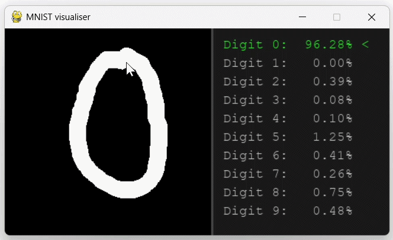

Why build it from scratch
Some of my other projects use existing libraries. I could
call model.fit() in Pytorch without being able
to explain what backpropagation was actually computing
underneath. This project was the opposite: doing the basics
by hand, so "gradient descent" stops being a phrase I use
and starts being something I could derive on a
whiteboard.
The forward pass
Every layer follows the same basic shape: take the input, multiply the weights and add the bias.
def forward(self, X):
Z = np.dot(X, self.W) + self.b
self.X = X
return ZThe one detail worth noticing is self.X = X The
layer caches its own input during the forward pass. The
backward pass needs it later to compute how much each weight
contributed to the final error.
Weight initialization
Weights aren't just random. Look at how
DenseLayer sets them up:
def __init__(self, input_dim, output_dim):
# initialise weights and biases
self.W = np.random.randn(input_dim, output_dim) * np.sqrt(2.0 / input_dim)
self.b = np.zeros((1, output_dim))
self.v_W = np.zeros(self.W.shape)
self.v_b = np.zeros(self.b.shape)The * np.sqrt(2.0 / input_dim) scaling is He
initialization. Random weights with the wrong scale cause
the signal passing through a deep network to shrink toward
zero or blow up as it moves through each layer, layers stop
learning either way. Scaling by the size of the input keeps
the variance of activations roughly stable from layer to
layer at the start of training. It's paired with ReLU
specifically, since that's what the derivation assumes.
v_W and v_b aren't used yet at this
point, they're set up here for momentum, which comes in
later during the parameter update step.
Activation functions
A stack of dense layers with nothing in between them collapses into a single linear function, no matter how many layers you add. Activations are what let the network learn anything non-linear. This library has three.
ReLULayer is the default for hidden layers.
Simple and easy to compute.
class ReLULayer:
def forward(self, Z):
# relu func is 0 if x <= 0 or x if x > 0
self.Z = Z
return np.maximum(Z, 0)
def backward(self, dA):
# the derivative of relu 0 if x <= 0 or 1 if x > 0
return dA * (self.Z > 0)SoftmaxLayer is for multi-class output, it turns
raw scores into a probability distribution that sums to 1
across all classes. This is what MNIST uses on its final
layer, one probability per digit.
class SoftmaxLayer:
def forward(self, Z):
# softmax is usually output layer
# shift z to keep within bounds
shift_Z = Z - np.max(Z, axis=-1, keepdims=True)
exps = np.exp(shift_Z)
return exps / np.sum(exps, axis=-1, keepdims=True)
def backward(self, dA):
# the loss gradient goes through softmax without effect
return dAThe shift_Z line isn't part of the actual math,
it just subtracts the max value before exponentiating so
large scores don't overflow. The backward pass looks like it
does nothing because it does, when softmax is paired with
cross entropy loss the gradient math simplifies and the
derivative cancels out cleanly, so the loss function handles
it instead.
SigmoidLayer is for binary output, a single
probability between 0 and 1. This is what logistic
regression uses.
class SigmoidLayer:
# basic sigmoid function output is between 0 and 1
def sigmoid(self, x):
return 1 / (1 + np.exp(-x))
def forward(self, x):
self.x = x
return self.sigmoid(x)
def backward(self, loss_gradient):
# calculate derivative
return self.sigmoid(self.x) * (1 - self.sigmoid(self.x)) * loss_gradientThe backward pass
Each layer only needs to know one thing: how much did my
output affect the loss? That's the incoming gradient,
dZ. From there, the layer computes its own
parameter gradients and passes the new gradient backward to
whichever layer came before it.
def backward(self, dZ):
dW = np.dot(self.X.T, dZ)
db = np.sum(dZ, axis=0, keepdims=True)
dX = np.dot(dZ, self.W.T)
self.dW = dW
self.db = db
return dXChained across every layer, this is backpropagation. No autograd, no magic, just the chain rule applied one layer at a time.
Loss functions
A loss function measures how wrong a prediction is, and its
backward() method is where the gradient chain
actually starts. This library has three, one per problem
type.
CrossEntropyLoss pairs with softmax for
multi-class classification.
class CrossEntropyLoss:
def forward(self, y_pred, y_true):
# calculate the error between the predictions and true targets
self.y_pred = y_pred
self.y_true = y_true
loss = -np.sum(y_true * np.log(y_pred + 1e-15)) / y_pred.shape[0]
return loss
def backward(self):
# calculate loss gradient
return (self.y_pred - self.y_true) / self.y_pred.shape[0]The + 1e-15 in the forward pass stops
log(0) from happening, which would return
negative infinity and break training.
BCELoss is binary cross entropy, for binary
classification, pairs with sigmoid.
class BCELoss:
def forward(self, y_pred, y_true):
self.y_pred = np.clip(y_pred, 1e-15, 1 - 1e-15)
self.y_true = y_true
return -np.mean(self.y_true * np.log(self.y_pred) + (1 - self.y_true) * np.log(1 - self.y_pred))
def backward(self):
return (1 / self.y_pred.shape[0]) * (self.y_pred - self.y_true) / (self.y_pred * (1 - self.y_pred) + 1e-15)MSELoss is mean squared error, for regression,
predicting a number instead of a class.
class MSELoss:
def forward(self, y_pred, y_true):
self.y_pred = y_pred
self.y_true = y_true
return np.mean((y_pred - y_true) ** 2)
def backward(self):
N = self.y_pred.shape[0]
return (2 / N) * (self.y_pred - self.y_true)Putting it together
The NeuralNetwork class just chains layers
together. Forward runs them in order, backward runs them in
reverse.
class NeuralNetwork:
def __init__(self, layers):
self.layers = layers
def forward(self, X):
# forward propagation through all layers
for layer in self.layers:
X = layer.forward(X)
return X
def backward(self, loss_gradient):
# backward propagation using chain rule
for layer in self.layers[::-1]:
loss_gradient = layer.backward(loss_gradient)update_params is where the weights actually
change, using momentum instead of a plain gradient step.
def update_params(self, lr):
# update weights and biases using learning rate
for layer in self.layers:
# check if layer is a hidden layer and not activation layer
if hasattr(layer, 'W'):
# momentum optization
layer.v_W = beta * layer.v_W + (1 - beta) * layer.dW
layer.W -= lr * layer.v_W
layer.v_b = beta * layer.v_b + (1 - beta) * layer.db
layer.b -= lr * layer.v_bhasattr(layer, 'W') is how it skips activation
layers, they don't have weights to update. v_W
and v_b are running averages of past gradients,
beta (set to 0.9) controls how much of the past
sticks around. Instead of only reacting to the current
batch's gradient, the update carries some momentum from
previous steps, which smooths out noisy updates and speeds
up convergence.
Decision trees
A different approach to the same problem, no gradients here. A decision tree repeatedly splits the data to make each resulting group as "pure" as possible, one class dominating.
Gini impurity measures how mixed a group is. 0 means every sample in the group is the same class.
def calculate_gini(y):
if len(y) == 0:
return 0
length = len(y)
classes = np.unique(y, return_counts=True)
return 1 - np.sum(np.square(classes[1] / length))Information gain is how much a split reduces that impurity, comparing the parent group's Gini to the weighted Gini of the two resulting children.
def calculate_information_gain(parent, left, right):
left_w = len(left) / len(parent)
right_w = len(right) / len(parent)
return calculate_gini(parent) - left_w * calculate_gini(left) - right_w * calculate_gini(right)Finding the best split means brute-forcing every feature and every possible threshold, keeping whichever gives the highest gain.
def find_best_split(X, y):
best_gain = -1
split_idx, split_thresh = None, None
n_features = X.shape[1]
for feat_idx in range(n_features):
X_column = X[:, feat_idx]
thresholds = np.unique(X_column)
for tresh in thresholds:
mask = X_column <= tresh
y_left = y[mask]
y_right = y[~mask]
gain = calculate_information_gain(y, y_left, y_right)
if gain > best_gain:
best_gain = gain
split_idx = feat_idx
split_thresh = tresh
return split_idx, split_thresh, best_gainThe tree builds itself recursively, splitting each group again and again until it hits a stopping condition, a pure group, too few samples left, or max depth reached.
def _build_tree(self, X, y, depth):
n_samples, n_features = X.shape
unique_classes = np.unique(y)
if len(unique_classes) == 1 or n_samples < self.min_samples_split or depth >= self.max_depth:
leaf_value = np.bincount(y).argmax()
return Node(value=leaf_value)
feat_idx, thresh, gain = find_best_split(X, y)
if gain <= 0 or feat_idx is None:
leaf_value = np.bincount(y).argmax()
return Node(value=leaf_value)
mask = X[:, feat_idx] <= thresh
left_child = self._build_tree(X[mask], y[mask], depth + 1)
right_child = self._build_tree(X[~mask], y[~mask], depth + 1)
return Node(feature=feat_idx, threshold=thresh, left=left_child, right=right_child)Random forest
One decision tree overfits easily. A random forest trains many trees, each on a random bootstrapped sample of the data, then predicts by majority vote across all of them.
def get_bootstrap_samples(X, y):
n_samples = X.shape[0]
indices = np.random.choice(n_samples, size=n_samples, replace=True)
return X[indices], y[indices]
class RandomForestClassifier:
def __init__(self, n_trees=10, max_depth=10, min_samples_split=2):
self.n_trees = n_trees
self.max_depth = max_depth
self.min_samples_split = min_samples_split
self.trees = []
def fit(self, X, y):
self.trees = []
for _ in range(self.n_trees):
X_sample, y_sample = get_bootstrap_samples(X, y)
new_tree = DecisionTree(max_depth=self.max_depth, min_samples_split=self.min_samples_split)
new_tree.fit(X_sample, y_sample)
self.trees.append(new_tree)
def predict(self, X):
y_pred = np.array([tree.predict(X) for tree in self.trees])
y_pred = np.swapaxes(y_pred, 0, 1)
return np.array([np.bincount(row).argmax() for row in y_pred])get_bootstrap_samples samples with replacement,
so each tree sees a slightly different version of the
dataset. Different trees end up making different mistakes,
and averaging their votes cancels a lot of that out.
Example: linear regression
Linear regression turns out to be a single dense layer with no activation and no output squashing, just raw numbers in, raw numbers out. This one predicts house prices from square footage, bedrooms, lot size, and a few other features, using the House Price Prediction Dataset from Kaggle.
# linear regression is 1 layer neural network without any activation
linear_regression = NeuralNetwork([
DenseLayer(7, 1)
])
loss_fn = MSELoss()Features and target both get scaled before training, features to zero mean and unit variance, price divided down to a smaller range, gradient descent converges a lot more reliably when the numbers aren't in the hundreds of thousands.
The training loop is the same shape every example in this project uses: shuffle, split into batches, forward, compute loss, backward, update.
for epoch in range(1, epochs+1):
indices = np.arange(X_train.shape[0])
np.random.shuffle(indices)
total_loss = 0
num_batches = X_train.shape[0] / batch_size
for i in range(0, X_train.shape[0], batch_size):
batch_indices = indices[i:i+batch_size]
x_batch = X_train[batch_indices]
y_batch = y_train[batch_indices]
y_pred = linear_regression.forward(x_batch)
total_loss += loss_fn.forward(y_pred, y_batch)
loss_gradient = loss_fn.backward()
linear_regression.backward(loss_gradient)
linear_regression.update_params(lr)Output:
Test Mean Absolute Error: $8,287.82
Test R² Score: 0.9982The model is trained on 80% of the data and evaluated on the remaining 20% it never saw during training, so this reflects genuine predictive performance rather than memorization. On the held-out test set, it explains 99.82% of the variance in house price (R² = 0.9982), with predictions off by an average of $8,287, which suggests the model found a real underlying pattern rather than overfitting to noise.
Example: logistic regression
One dense layer plus a sigmoid, trained with BCE loss instead of MSE, and that's the same code turned into a binary classifier. This one's trained on a tiny toy dataset, ten 2D points split into two classes.
logistic_regression = NeuralNetwork([
DenseLayer(2, 1),
SigmoidLayer()
])
loss_fn = BCELoss()After training, it predicts on a new point that wasn't in the training data:
# 9h study 8h sleep
raw_student = np.array([[9.0, 8.0]])
X_mean = np.mean(X_binary, axis=0)
X_std = np.std(X_binary, axis=0)
scaled_student = (raw_student - X_mean) / X_std
prediction = logistic_regression.forward(scaled_student)
print(f"Passing Probability: {prediction[0][0] * 100:.2f}%")Output:
Passing Probability: 99.17%With this dataset, more study hours and more sleep both push the prediction toward "pass," and 9 hours studied plus a full night's sleep lands solidly in that territory.
Example: diabetes classifier
The random forest, tested on something real: the Pima Indians Diabetes dataset, predicting diagnosis from features like glucose, blood pressure, and BMI.
forest = RandomForestClassifier(n_trees=10, max_depth=5, min_samples_split=5)
forest.fit(X_train, y_train)
predictions = forest.predict(X_test)
accuracy = np.mean(predictions == y_test) * 100
print(f"Random Forest Test Accuracy: {accuracy:.2f}%")n_trees=10 means ten trees vote on each
prediction, averaging out any single tree's mistakes.
max_depth=5 and
min_samples_split=5 both keep individual trees
shallow and simple, stopping them from carving the data into
tiny, overfit groups.
Output:
Random Forest Test Accuracy: 78.57%78.57% isn't a perfect score, but it's a good result for a medical dataset like this since diabetes risk depends on a lot of real world factors that this dataset doesn't capture (diet, family history, activity level), so there's a ceiling on how accurate any model can get from eight features alone.
Example: MNIST digit classification
The biggest example in the project, and the one behind the interactive demo. A neural network trained to recognize handwritten digits
nn = NeuralNetwork([
DenseLayer(input_dim=784, output_dim=512),
ReLULayer(),
DenseLayer(input_dim=512, output_dim=10),
SoftmaxLayer()
])
loss_fn = CrossEntropyLoss()784 inputs is a flattened 28x28 pixel image, 10 outputs is one probability per digit. Before training, every image gets randomly rotated, zoomed, and shifted:
def augment_image(image_784):
img_2d = image_784.reshape(28, 28)
scale_factor = np.random.uniform(0.75, 1.20)
zoomed_img = zoom(img_2d, scale_factor, order=1)
h, w = zoomed_img.shape
if scale_factor < 1.0:
pad_y = (28 - h) // 2
pad_x = (28 - w) // 2
img_2d = np.zeros((28, 28))
img_2d[pad_y:pad_y+h, pad_x:pad_x+w] = zoomed_img
else:
start_y = (h - 28) // 2
start_x = (w - 28) // 2
img_2d = zoomed_img[start_y:start_y+28, start_x:start_x+28]
random_angle = np.random.uniform(-15, 15)
img_2d = rotate(img_2d, random_angle, reshape=False, order=1)
random_shift_x = np.random.uniform(-2, 2)
random_shift_y = np.random.uniform(-2, 2)
img_2d = shift(img_2d, shift=[random_shift_y, random_shift_x], order=1)
return img_2d.reshape(784)Real handwriting isn't perfectly centered or a consistent size, augmenting the training data this way makes the model more robust to that instead of overfitting to the exact positioning of the original MNIST images.
Output:
Final Test Accuracy: 94.72%After 20 epochs of training on augmented data, the model reaches 94.72% accuracy on the test data. That's without any convolutional layers, just dense layers and augmentation doing the work of generalizing to messier, real-world handwriting.
The interactive demo
The most satisfying part of this project to actually use: a pygame window where you draw a digit by hand and watch a neural network classify it in real time. Every mouse movement redraws the canvas, downsamples it to MNIST's native 28×28 format, and runs it through the trained model.
def get_nn_prediction(high_res_surface):
low_res_surface = pygame.transform.smoothscale(high_res_surface, (28, 28))
rgb_pixels = pygame.surfarray.pixels3d(low_res_surface)
gray_pixels = rgb_pixels[:, :, 0].T
img_flattened = gray_pixels.astype(np.float32).reshape(1, 784) / 255.0
pred_probabilities = nn.forward(img_flattened)
return pred_probabilities[0]